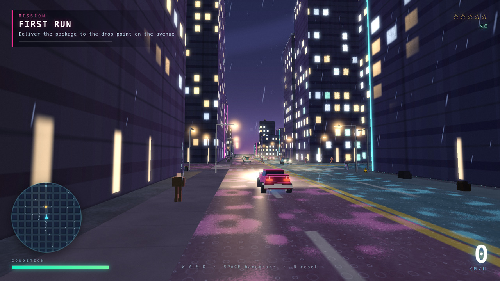
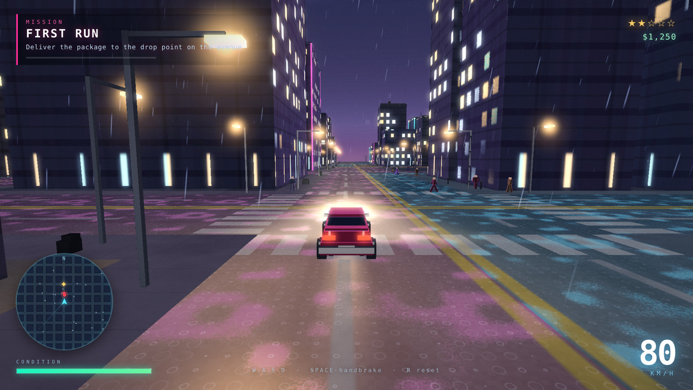
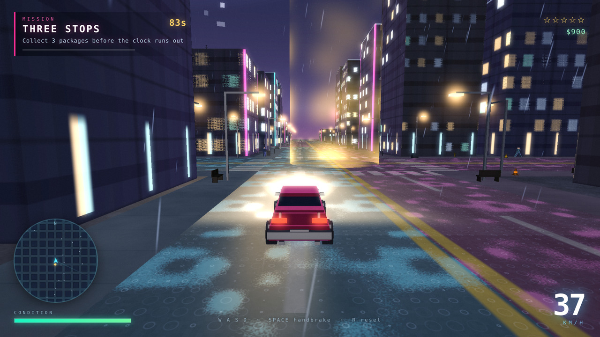

A 3D open-world night city that runs in the browser. Drive through rain-soaked streets, thread traffic, dodge the police, and make the timed deliveries before the clock runs out.

The city
The chase
The runBlocks, towers and street furniture stream in around the car, so the map stays dense without a load screen.
Pedestrians with a real knee-bend walk cycle, scattered along the sidewalks and crossing when it rains.
Wet asphalt, reflective puddles, headlight pools and a full night palette built in raw WebGL.
A live minimap radar tracks traffic, police and the delivery target while you drive.
Pick up a package and reach the drop before the timer expires — the run is the mission.
Every mesh is generated in code and every shader is hand-written. The whole build fits in 160 KiB.